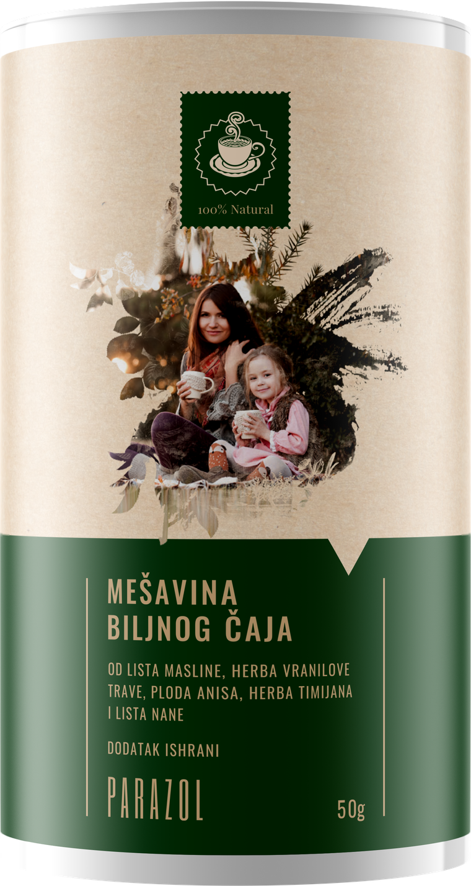
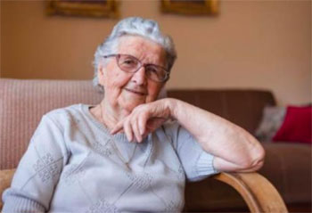

„Виждал съм ги в телата на хора, които и представа нямаха, че ги носят“
„Години живяха в мен, а аз винях годините и умората.“ Патолог с 34 години практика казва истината, която никой не иска да чуе: паразитите разяждат тялото в тишина, а първопричината почти никога не се търси. Историята на жената, която се спаси навреме.
Шест години Гинка Пашова — пенсионирана начална учителка от село под Рожен — записваше в една ученическа тетрадка всички диагнози, които ѝ поставяха. Единайсет, изписани с химикал, една под друга. Нито една вярна. Историята ѝ стигна до човек, който трийсет и четири години е гледал с очите си какво носят хората в себе си — и който днес казва онова, което никой не пише в изследването.

Изкачихме се към Момчиловци в четвъртък, около обяд. Пътят към къщата на Гинка минава покрай църквата и после тръгва нагоре по чакълест сокак, който колата взема на първа. На портата ни чакаше с тетрадката в ръка, все едно беше лична карта.
На 59 години е. Трийсет и една от тях е прекарала пред дъската, в селското училище, в началния курс. Жена, която записва. Която води сметка. Точно затова, когато взе да се чувства зле, направи единственото, което ѝ се стори логично: купи си ученическа тетрадка и записа в нея всеки преглед, всяка диагноза, всяко лекарство.
„Мислех, че така помагам“, казва. „Че щом всичко е написано, някой ще хване конеца. Никой нищо не хвана. А сега тази тетрадка е доказателството, че шест години от живота ми отидоха на вятъра.“
- Хроничен гастрит
- Синдром на раздразнените черва
- Желязодефицитна анемия
- Алергичен контактен дерматит
- Гастроезофагеален рефлукс
- Синдром на хронична умора
- Тревожно разстройство
- Глутенова непоносимост (непотвърдена)
- Чревна дисбиоза
- Безсъние от менопауза
- „Нищо патологично — това са годините“
„Последната беше най-болезнената. Един млад доктор, свестен човек, прегледа тетрадката, върна ми листата и меко ми каза: «Госпожо учителко, това са годините. Трябва да свикнете.» Бях на 57. Аз, която на 50 изкачвах този баир с два чувала на гръб.“
Гинка Пашова, 59 г., Момчиловци„Най-лошото е, че изследванията ми излизаха добри. Всичките. Кръвта «в границите на нормата». Тогава защо се чувствах, все едно някой се храни от мен? Стигнах дотам да мисля, че си въобразявам. Че полудявам.“
Гинка Пашова, 59 г., МомчиловциЧовекът, който 34 години е гледал онова, което другите получаваха само на хартия
Разговор с д-р Николай Балабанов, патолог, 34 години практика и над 9 000 аутопсии

— Аз не бях доктор в кабинет. Аз стоях в едно помещение без прозорци, в сутерена на болницата, и отварях хора от всякаква възраст. Трийсет и четири години. Над девет хиляди. Хора, които никога не съм виждал живи и за които накрая знаех повече от собствените им семейства.
Ще ви го кажа простичко, без учени думи. Когато срежеш черво, то трябва да е с определен цвят — живо, розово, чисто. При мнозина от онези на моята маса стената беше покрита с гъст сив налеп, сякаш намазана отвътре с восък. Под този налеп, враснали в самата стена, седяха те. Не винаги едри червеи, каквито показват по интернет — по-често дребни, на колонии, заедно с ларвите. За да стигна до онова, което ми трябваше, всеки път режех налепа със скалпел.
Д-р Балабанов говори бавно, с дълги паузи, като човек, свикнал да не бърза. Пенсионира се преди няколко години. Живее в Смолян, в блок до болницата, в която е работил. На масата му стои папка с картонени корици — запазил е, казва, „няколко неща, с които не можах да се разделя“.
„Хората мислят, че паразитите са нещо от едно време. От бедността. От други държави. Това е заблуда, която струва години живот. Те са тук, при нас, в най-обикновените неща: в месото от коленето на прасето, ако не е стояло достатъчно на огъня; в неизмитата зеленина от градината; в пръстта под ноктите; във водата от кладенеца; по ръцете, след като си почесал кучето зад ухото. И веднъж влезли, могат да стоят години в тялото, да се размножават и бавно да го тровят — докато човекът си казва, че е гастрит, алергия или просто умора.“
Папката, която не можа да изхвърли
— Казваше се Асен Караджов. На петдесет и девет. Четиринайсет години беше работил на строеж в Испания и се беше прибрал в Смилян, за да си вдигне къща. Никога не съм го виждал жив. Видях само папката му — и него.
За две години три пъти беше давал изследвания. Три пъти му излизаха чисти. Последния път лекарят му беше написал на направлението: „изразена астения, отслабване, без установима причина“. Тоест: човекът се топи и не знаем защо.
Дойде на моята маса един вторник. Инсулт, на 59 години. А в червата му беше точно онова, което нямаше какво да търси там — под същия сив налеп.
— Не казвам, че паразитите го убиха. Не мога да го кажа и никога няма да го кажа. Казвам друго: никой не потърси по-нататък, защото имаше три хартии, които твърдяха, че няма нищо. Така се губят хората у нас. Не от злоба. От хартии, които изглеждат успокоителни.
Затова се съгласих да говоря. Излязох в пенсия и си рекох, че имам право да мълча. Но нямам.
Защо мълчи хартията: три неща, които никой не ви обяснява
Как е възможно да имаш изрядни изследвания и тяло, което гасне

— Този въпрос съм го чувал хиляда пъти: „Докторе, ама аз си правя изследвания всяка година и всичко ми е наред.“ Ще ви обясня защо това не значи кой знае какво.
- В кръвта ги нямаОбикновената кръвна картина не ги показва — и не защото лабораторията е слаба, а защото те не са в кръвта. Седят в стената на червото. Кръвта показва най-много сянката им: леко понижен хемоглобин, който после години наред лекуваш с хапчета желязо.
- Изследването на изпражнения не се прави веднъжЕдинственото, което би могло да ги улови, лъже, ако го дадеш само веднъж. Яйцата не излизат всеки ден, а на цикли. Ако пробата се падне в „празен“ ден, резултатът излиза чист. След седмица може пак да излезе чист. За да значи нещо, се повтаря три-четири пъти, през няколко дни.
- Никой не го назначава три пътиТук е възелът. За шест години обикаляне по лекари на Гинка Пашова не ѝ назначиха нито едно. Нито едно. На Асен Караджов направиха три — но по едно на година, което е все едно да не си правил нито едно.
Умората, която не минава, подуването, сърбежът по кожата, „алергиите“ и „нервите“ след 40-годишна възраст не са винаги „от годините“. Много често са знак за тяло, което носи на гърба си жив товар.
Хапчетата за „гастрит“ и за „алергия“ прикриват симптома, докато причината спокойно продължава да се размножава. Без пълно прочистване тялото отслабва година след година — а проблемът се качва от червата към черния дроб и жлъчката.
„Хапчето от аптеката удря един вид. А в човека живеят десетки“
Защо обичайното лечение се проваля почти винаги — и какво всъщност прави то на черния дроб
— Втората заблуда, също толкова скъпа като първата: че е достатъчно да глътнеш едно хапче и готово. В тялото на човека живеят десетки видове — едни в червата, други в черния дроб, трети в жлъчните пътища, четвърти в мускулите. Аптечното хапче поразява най-много един или два. Останалите остават, размножават се, продължават.
Ето кръга, от който хората не излизат: изпиваш хапчето, няколко седмици ти е по-добре, после се връщат умората, подуването, кожата — и си казваш „не са те, нали пих лекарство“. А всъщност си ударил само част от проблема. И на всичкото отгоре силната химия в тези хапчета удря точно черния дроб и бъбреците — тоест точно органите, които вече носеха тежестта.

„Седем години се лекувах от «алергия». Кремове, хапчета, капки, двама дерматолози. Ръцете ми горяха и се чешех нощем, докато оставях следи. Никой, ама абсолютно никой, не спомена тази дума.“
Гинка Пашова, 59 г., Момчиловци„Мене ме държаха пет години на гастрит. Тежест след всяко ядене, гадене, подут като тъпан. Изгълтах всичко, което ми дадоха. Напразно. И отслабвах, макар да ядях като нормален човек. Пет години и куп пари за диагноза, която не беше моята.“
Илия Мурджев, 63 г., бивш миньор в МаданСлучаи, които промениха моя поглед — и ще променят начина, по който гледате собственото си здраве
— Позволете ми да ви кажа какво минаваше през дневника ми година след година. Не цифри. Не статистика. Хора. Хора с имена, които до последния си ден са мислели, че проблемът им е нещо съвсем друго.

„Постоянно бях уморена, бледа, изцедена. Докторите казваха: «недостиг на желязо, пийте хапчета». Пих ги с години. Нищо. Никой не попита дали някой друг не взема това желязо от мен. А го вземаше.“
от случаите, за които разказва д-р Балабанов
„Отслабвах, а се хранех нормално. Жена ми се шегуваше, че имам «бърз метаболизъм». Не беше смешно. Нещо ядеше вместо мен, от мен. Разбрах твърде късно, за да ми е от полза — но вие, които четете това, още не сте там.“
от случаите, за които разказва д-р БалабановПризнаците, които всички отписват на годините
Д-р Балабанов казва: ако се разпознаете в три или повече, струва си да си зададете въпроса — независимо какво пише на последните изследвания
- Умора, която не минава — спите осем часа и се будите като след ден на коситба;
- Подуване, газове, тежест след ядене — „сякаш нещо ври в корема“;
- Запек и разстройство, които се редуват без причина;
- Сърбеж, обриви, екземи, „алергии“, които идват и си отиват отникъде;
- Неудържим глад за сладко и за тестени храни;
- Скърцане със зъби насън, неспокоен сън, събуждане около три през нощта;
- Анемия и недостиг на желязо, които не се оправят дори с хапчета;
- Тъмни кръгове под очите, бледа кожа, чуплива коса и нокти;
- Сърбеж около ануса, особено нощем;
- Раздразнителност, „нерви“, мъгла в главата, слаба памет;
- Чести настинки и инфекции — тяло, което вече няма с какво да се брани.
Всеки от тях лесно се отписва на нещо друго. Точно затова остават неоткрити с години.
Всеки ден с този товар в тялото е още един ден интоксикация. Хиляди хора лекуват с години грешното нещо, докато истинската причина работи безпрепятствено. Не отлагайте повече — нито заради себе си, нито заради близките си.
— Аз цял живот гледах последиците. Но решението не дойде от аутопсионната зала. Дойде от една кошара. От човек без никаква медицинска диплома, който обаче от петдесет години прави правилно едно нещо, което ние, хората, никога не правим на себе си.
Календарът на вратата на обора
Бай Тодор Хаджиев, 74 г., бивш ветеринарен техник в ТКЗС, днес овчар в с. Гела
— Учих за ветеринарен техник в Стара Загора и двайсет и две години работих в ТКЗС. След като го закриха, останах с моите овце. Осемдесет глави, две кучета и една котка, която никога не се задържа в къщата.
На вратата на обора съм заковал един календар. Там си отбелязвам с химически молив кога обезпаразитявам. Овцете — напролет и наесен. Кучетата — четири пъти в годината, че шетат из гората. Котката — два пъти. Идва внукът от Смолян и ми се смее, вика, че съм по-стриктен от болница.
— Бях някъде на шейсет тогава. И си зададох простия въпрос на прост човек: аз ям от тяхното месо, пия от същия кладенец, копая в същата пръст, спя с кучетата в краката — а мене кой ме записва на календара? Никой. Никога. Нито като дете, нито в казармата, нито в стопанството. От шейсет години — никой.
Животното в двора ми беше по-добре пазено от мене. Това е срамът, от който не можах да се отърся.
— В стопанството приготвях за животните една билкова смес. Трябваше да е билкова и мека — силна химия не смеех, защото онова мляко и месо отиват на трапезата на хората. Рецептата я знаех от един старец от Широка лъка, който я държеше от баща си.
И забелязах нещо, на което отначало не дадох значение: овчарите, които пиеха чай от същата смес — пиеха го за „тежест в стомаха“, че храната на кошарата си е каквато е — спираха да се оплакват. От умора. От кожа. От корем. Един от тях, Гавраил, ми рече една есен: „Бай Тодоре, откакто пия тая твоята горчива вода, спя като пеленаче.“ Тогава се замислих сериозно.
Билковата смес, която използваше бай Тодор Хаджиев, съдържа:
- Пелин (Artemisia absinthium)Най-известното билково средство за изгонване на паразити от червата.
- Вратига (Tanacetum vulgare)Действа силно срещу чревните паразити и техните яйца.
- Карамфил (евгенол)Разгражда яйцата и ларвите — точно онова, което другите билки не достигат.
- Черен орех (Juglans nigra)Екстракт от черупката: прочиства червата и помага за изхвърлянето.
- Тиквени семки (Cucurbita)Действат меко и успокояват лигавицата на червата.
Тези билки трудно се погаждат помежду си. Ако съотношението не е точно, чаят удря само един вид — тоест точно колкото аптечното хапче — а останалите остават. Тайната е в това, че действа на няколко наведнъж: и на възрастните, и на яйцата, и на ларвите.
Така се роди Parazol — чаят, който прочиства напълно, но меко
— Сместа от кошарата занесох на една жена, веща в билките, и я нагодихме за човек: същите билки, друго съотношение, форма на чай, която е естествена за тялото. Казва се Parazol. Прави се като всеки чай: една чаена лъжичка се залива с гореща вода, оставя се да постои и се пие сутрин и вечер, докато трае курсът. Без хапчета, без силна химия — билките си вършат работата през червата, тоест точно там, където седят те.

Силата е в това, че чаят действа поред и докрай: първо върху възрастните, после върху яйцата и ларвите, после помага на тялото да изхвърли всичко навън и червото да се възстанови. Хапчето поразява една мишена. Чаят минава през целия храносмилателен тракт — по целия път, на който те наистина се намират.
Всяка билка, в своето съотношение, хваща различна фаза: възрастен, яйце, ларва. Затова прочиства напълно, а не наполовина. И най-важното — прави го меко, без нападението над черния дроб и бъбреците, каквото правят силните хапчета. Първо го пиеха овчарите на кошарата. После хората от селото, с всички онези оплаквания „без решение“.
— Бай Тодор е втори братовчед на мъжа ми. Дойде на един помен, видя ме как изглеждам и ми рече, ей така, без заобикалки: «Гинке, имаш лицето на майка ми, преди да се изчисти. Вземи и пий това три седмици.» Разсърдих му се, честно да ви кажа. Взех пакетчето повече за да се отърва. На третия ден усетих, че коремът не ме притиска както ме притискаше от години. Отдадох го на случайност. Едва по-късно, когато ми обясни д-р Балабанов, разбрах какво се е случило всъщност.
Четирите стъпки, по които Parazol прочиства организма
Какво се случва, поред, в тялото ви
- Изгонване на възрастнитеОще в първите дни на курса пелинът и вратигата действат върху възрастните паразити в червата — отслабват ги и помагат на тялото да ги изхвърли по естествен път. Не един вид, както прави хапчето, а няколко наведнъж.
- Унищожаване на яйцата и ларвитеКарамфилът (евгенолът) разгражда яйцата и ларвите — точно онова, което другите билки не достигат. Тази стъпка е ключът: без нея всичко започва отначало от останалите яйца. Затова курсът прочиства напълно, а не частично.
- Извеждане на отпадъците от тялотоДокато си отиват, организмът се прочиства от отпадъчните вещества, които те с години са изливали в кръвта. Черният орех и тиквените семки помагат на черния дроб и червата да изхвърлят натрупаното — отшумяват умората, подуването и мъглата в главата.
- Възстановяване на червата и на защитатаСлед прочистването сместа успокоява лигавицата на червото и оставя тялото да си възстанови запасите. Връща се енергията, успокоява се кожата, храносмилането влиза в ред, а имунитетът — притъпен с години в глуха борба — отново укрепва.
„Бях скептик. Резултатите не ми позволиха да остана“
Наблюдение върху 2 340 души на възраст от 45 до 86 години
— Когато чух за пръв път за билков чай, се усмихнах. Трийсет и четири години на масата в патологията те учат да не вярваш на приказки. Но онова, което показваха хората, които го пиеха, беше твърде ясно, за да си затворя очите. Група специалисти разшири наблюдението върху над 2 300 души от цялата страна — точно с онези симптоми, които почти никой не свързваше с това.
Видях хора, държани с години на „гастрит“ и на „алергия“, как за няколко седмици си връщат енергията, как им се успокоява кожата, как храносмилането им влиза в ред. Онова, което никое хапче не беше решило с години.
Резултати от наблюдението „Parazol“
Контролна група: 2 340 души, 45–86 години
Какво пише днес в тетрадката на Гинка Пашова
Шест години лекувана от „гастрит“, „раздразнени черва“ и „хронична умора“. След курс с чая Parazol — за първи път от години се събуди отпочинала, а кожата ѝ се успокои.
Гинка беше сред първите хора, на които бай Тодор даде сместа. На 59 години, след шест години обикаляне по лекари, с изрядни изследвания и тяло, което се топеше. Дъщеря ѝ е в Атина, синът работи в Германия. Звъняха в неделя, пращаха пари за празниците — и не забелязваха нищо, защото и те си мислеха, че е „умора и възраст“.

„Шест години се влачих от лекар на лекар. Постоянно уморена, подута, кожата ми гореше, косата ми падаше на кичури в гребена. Казваха ми: гастрит, раздразнени черва, нерви, годините. Пиех всичко, което ми даваха. Нищо. А аз се чувствах, все едно някой се храни от мен.
Най-тежкото беше, че всички хартии излизаха добри. Стигнах дотам да ме е срам да ходя на кабинет. Казвах си, че преувеличавам, че съм жена, която се оплаква.
Пих чая три седмици, сутрин и вечер, като онази горчива вода на бай Тодор. На третия ден коремът ми олекна. След седмица се събудих отпочинала — за първи път не помня откога. След три седмици кожата на ръцете ми се успокои, за първи път от седем години. А след около месец се усетих, че изкачвам баира до църквата, без да спирам по средата.
Плаках. Не от радост. От яд. Шест години и куп пари, защото никой не погледна където трябва. Отворих тетрадката, написах на последната страница «Не бяха годините» и я прибрах в чекмеджето.“
Гинка Пашова, 59 г., с. Момчиловци, СмолянскоВторият човек, с когото говорихме, беше Илия Мурджев, 63 г., бивш миньор в Мадан, държан пет години на лечение за гастрит, който не минаваше с нищо.

„Двайсет и осем години бях в мината. Мислех, че от там ми идва всичко. Тежест след всяко ядене, гадене, корем, подут като тъпан. Разкарваха ме по изследвания, даваха ми хапчета за стомах. Нищо. И отслабвах, макар да се хранех нормално — жена ми на шега казваше, че съм имал метаболизъм на младеж. Не беше смешно.
Съседът ми каза за този чай. Взех го повече за да го изкарам от къщи. След някакви десет дни обядвах и станах от масата, без нищо да ме притиска. Останах прав в кухнята и си помислих: това ли било? Толкова ли трябваше?
Най-много ме боли, че загубих пет години. Пет години, в които отказвах да ида на сватба, на кръщене, където и да се яде, за да не се излагам.“
Илия Мурджев, 63 г., Мадан„Не прикрива симптома. Изкарва причината навън“
Не печелят само тежките случаи. Всеки над 40 години, който усеща първите признаци, може да скъси тази история с години.
— Курсът обикновено трае от три до четири седмици, а при онези, които носят проблема отдавна, може и повече. Един курс, изкаран докрай, е достатъчен — това не е нещо, което се пие постоянно. Някои го повтарят по-късно веднъж годишно, превантивно, точно както се прави при животните, защото всичко може отново да се внесе с храната или с водата. Но това вече е избор, не задължение.
Нещата идват поред: в първите дни отшумяват подуването и тежестта, после се връща енергията, после се успокоява кожата, после храносмилането влиза в ред. Тялото само знае какво да прави, щом му свалиш товара от плещите.
Благодарение на сместа на бай Тодор Хаджиев хиляди хора в България изкараха курса докрай. Няколко случая:

Мъж, 65 години, Шумен. Години „гастрит“ и хронична умора. След курса: подуването изчезна, енергията се върна, храносмилането се нормализира.

Жена, 58 години, Плевен. „Алергия“ и обриви по кожата с години. След курса: кожата чиста, сърбежът спря, реакциите престанаха.

Жена, 72 години, Ямбол. Анемия, която не се оправяше дори с желязо. След курса: изследванията се подобриха, умората и бледността изчезнаха.

Мъж, 70 години, Кюстендил. Постоянно подуване, безсъние, скърцане със зъби. След курса: спокоен сън, нормално изхождане, върнато тегло.
— Аз цял живот гледах какво остава след тях. Затова тези случаи ме засягат: щом товарът бъде свален, тялото само се изправя. Без силна химия. Без хапчета, които удрят черния дроб. Човешкото тяло е силно — трябва само навреме да му махнеш онова, което го гризе.
Защо го няма в аптеките? И как може да се стигне до него
Производството е бавно и мъчително. Както ми обясняваше бай Тодор, билките трябва да се берат в точния момент и да се съчетаят в точното съотношение. Всичко се прави в малки количества, на ръка, и не може да покрие търсенето.
Ще трябват поне 2–3 години, за да влезе Parazol в аптеките. Дотогава се разпространява само онлайн, в рамките на програма за подкрепа, а отстъпката може да достигне 50% — което за един пенсионер наистина има значение.
Моля ви: не пропускайте програмата. Не само заради себе си — а и заради близките си, които може би от години лекуват грешното нещо, без да подозират. Прочистете себе си и помогнете на своите.
За поръчка използвайте формуляра по-долу.
Последната възможност тази година
За вас или за някой близък, който от години страда без правилния отговор

Запазени са 20 000 опаковки единствено за читателите на това издание. Всеки български гражданин над 40 години може да получи отстъпка до 50%, а програмата продължава до .
Не чакайте, докато умората, кожата и коремът станат част от всеки ден. Докато дадете още веднъж пари за диагноза, която не е вашата. Спомнете си календара на вратата на обора: животните ги записваме на него два пъти в годината, а себе си — никога. Един курс, изкаран докрай. Дали ще го повторите някога превантивно, си е ваш избор.
Въведете името и телефонния си номер. Консултант ще ви потърси, ще избере подходящата програма и ще организира доставка с куриер или по пощата за 2–3 дни, директно на вашия адрес.
Вашето място е запазено№ 19 974

За да се възползвате от отстъпката от 50%, въведете името и телефонния си номер в полетата по-долу и натиснете бутона „ПОРЪЧАЙ“.
- Доставка с куриер до посочен от вас адрес
- Плащане при получаване — не плащате нищо предварително
- На кутията не пише нищо — дискретна опаковка

Коментари
Читатели на изданието · подредени по най-нови

Разплаках се на онази тетрадка. Майка ми е на 74 и също си води тефтерче, в което записва хапчетата. От четири години я разкарват с „раздразнени черва“. Никой, ама абсолютно никой, не ѝ е назначил онова изследване три пъти. Днес ѝ поръчах. Как не се сетих по-рано.

Пия го от 12 дни, сутрин и вечер. Подуването, което ме мъчеше три години, го няма. Вчера закопчах пола, която стоеше в гардероба от миналата година. Толкова.

На 69 съм. Седем години „алергия“ — кремове, хапчета, капки, двама дерматолози. Ръцете ми горяха и се чешех нощем, докато оставях следи. Три седмици с чая и кожата се успокои. Седем години, а отговорът бил друг. Не мога да ви опиша яда си.

Шофьор съм, по 10 часа на волана. Умора, мъгла в главата и глад за сладко, който не можех да спра — ядях вафли на всяка бензиностанция. Виках си: годините и пътят. Четвъртата седмица: карах до Бургас, без да се боря със съня.

„Животните ги записваме на календара два пъти в годината, а себе си никога.“ Прочетох това изречение три пъти. И аз имам календар на вратата на обора, с овцете и кучетата по него. Поръчах за себе си, за жената и за тъста. Срам ме беше, друго не.

Мисля да поръчам за баща ми. На 78 е, от години се оплаква от храносмилане и от умора, а докторите не откриват нищо. Не е ли късно на тази възраст? Не искам да му давам напразни надежди.

Даниела, майка ми е на 82. Точно същото: умора, подуване, изследвания „добри“. Изкара курса докрай. Сега се храни нормално, спи нощем и пак започна да излиза на портата при съседките. С нищо не преувеличавам. Поръчай му, баща ти заслужава шанс.

Даниела, поръчвай спокойно. Аз съм на 78 и имах точно това — никой не знаеше какво ми е. Един месец, и се вдигнах на крака. На тази възраст всеки месец е от значение, не отлагай.

Аз нямам нито куче, нито котка, живея сама в блок, на четвъртия етаж. Чудех се дали тази история изобщо се отнася за мен. После се сетих, че ям зеленчуци от пазара, от село, и месо от коленето, от девер ми. Сама си отговорих. Поръчах.

На 68 години мислех, че е нормално да си постоянно уморена. Тази пролет прекопах сама цялата градина и после не легнах да се излежавам. От десет години не бях правила това.

На 82 съм. Миналата година едва се движех из къщата — умора, лошо храносмилане и хващах всяка настинка, която мине през селото. Изкарах курса. Не казвам, че съм се подмладил. Казвам, че пак излизам на портата и пак ходя сам до църквата.

Жена ми се мъчи от години — кожа, умора, „нерви“. Страхувах се да не е нещо по-лошо и отлагахме изследванията като глупаци. Поръчах две опаковки. Поне започваме отнякъде.

Чета и си мисля за свекърва ми, която си отиде преди четири години. Точно така беше: отслабваше, беше уморена, изследванията излизаха добри и всички казвахме, че са годините. Може и да греша. Но не искам да сгреша втори път, с майка ми.

Куриерът ми го донесе за два дни, платих на вратата. На кутията наистина не пише нищо — на мен това ми беше важно, че живея в блок и не искам приказки по стълбището. На втора седмица съм.

Питах в две аптеки — нямат го и не го поръчват. Едната фармацевтка ме погледна доста странно, като казах откъде знам. Поръчах оттук. Свекървата е на 81 и от години я държим на хапчета за стомах напразно.